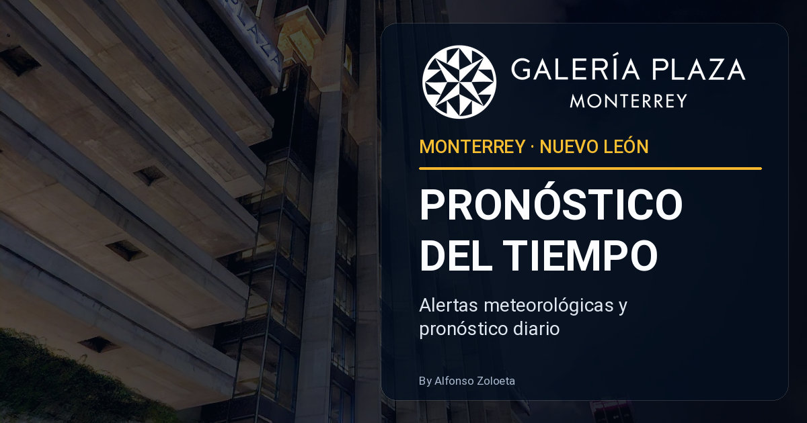

Pronóstico del tiempo de Monterrey
Consulta las condiciones actuales, el pronóstico de cuatro días y los avisos meteorológicos.
Abrir aplicación meteorológica
Consulta las condiciones actuales, el pronóstico de cuatro días y los avisos meteorológicos.
Abrir aplicación meteorológica